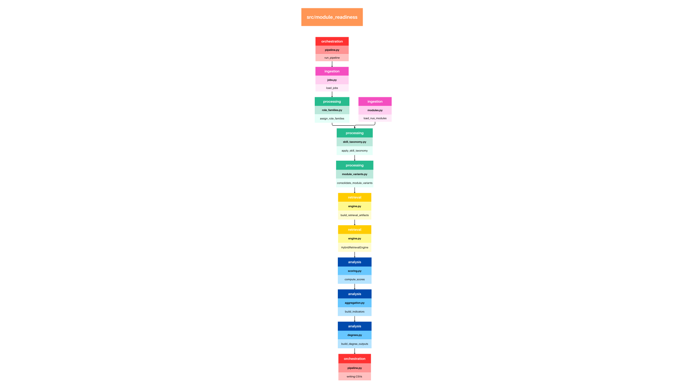
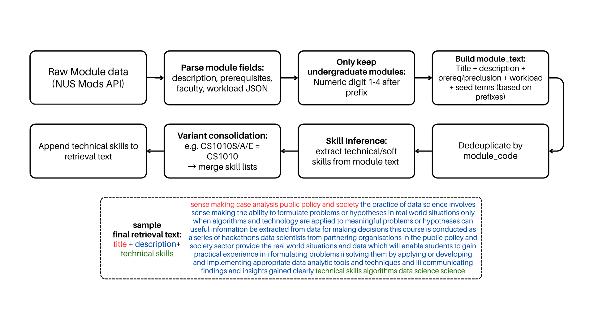
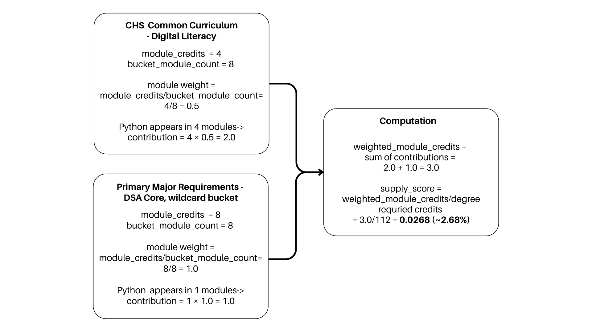
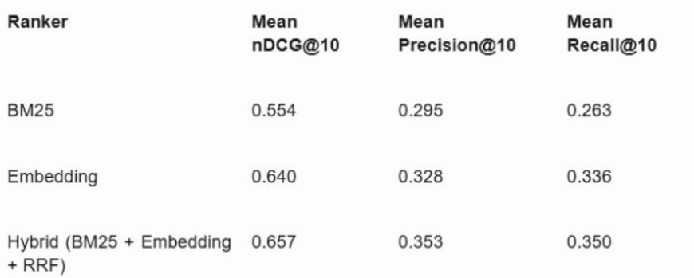
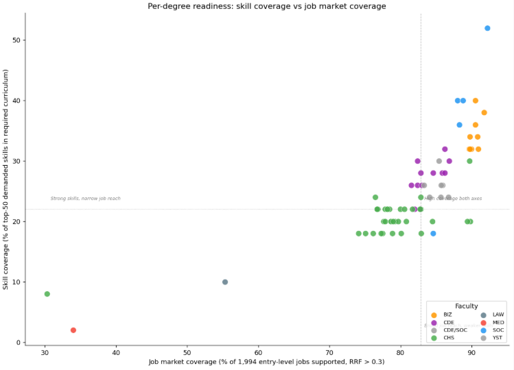
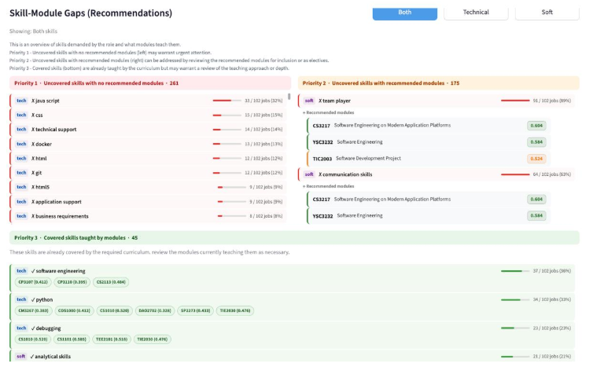
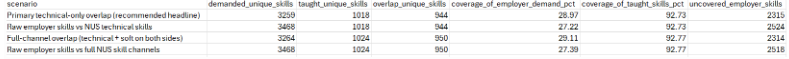
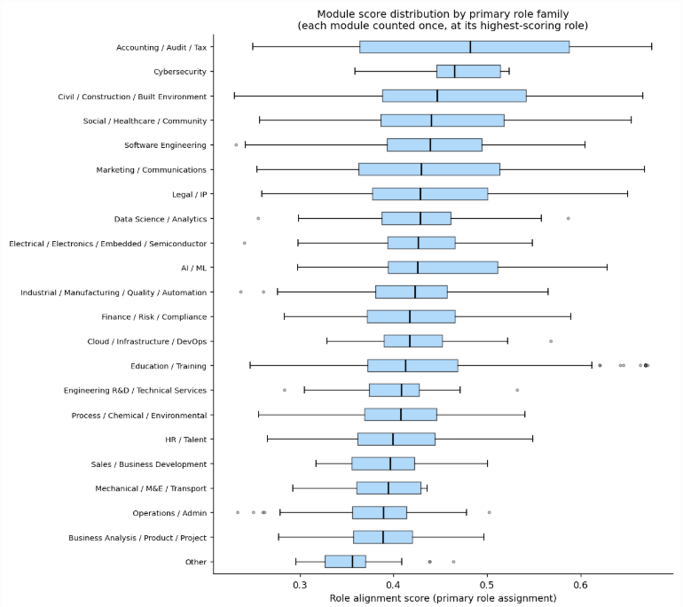
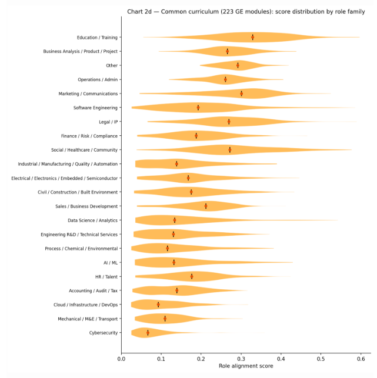
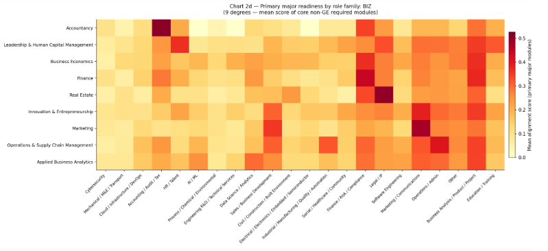

{kind=link}

Figure 2. Job data cleaning and feature-engineering pipeline.
With the rise of AI and rapid technological change, the job market is evolving at an unprecedented pace, as seen in retrenchments and concerns over market saturation. As universities are a key pathway for skills development, the Ministry of Education (MOE) must ensure that university curricula remain aligned with labour market needs so that students can land desirable jobs.
This project analyses whether current university modules equip students with the skills demanded by today’s job market and uses these insights to inform policy recommendations.
MOE oversees curriculum of publicly-funded universities and faces the challenge of ensuring that university curricula remain aligned with rapidly changing labour market needs. With the rise of AI and technological change, job skill requirements are evolving quickly, but there is currently no clear and scalable way to identify which university modules best prepare students for specific jobs.
Approximately 18,000 graduates in Singapore seek to possibly enter the workforce every year. This affects policymakers, universities, and students. Without such insights, curriculum updates may lag behind industry needs, and students may graduate without the skills most valued by employers.
Data science and machine learning are suitable approaches because module descriptions and job postings are both large-scale text datasets. NLP methods can efficiently analyse and match these texts to identify skill alignment and gaps.
This project is considered successful if it:
This project assumes that:
We treat our NLP retrieval methods as fixed off-the-shelf components. Although the underlying lexical and semantic scoring frameworks are established, practical outputs still depend on implementation details such as tokenization, indexing, and pre-trained representation spaces.
Accordingly, we do not tune internal scoring mechanisms themselves. We tune only retrieval thresholds and fusion settings on top of base retrievers. Our key hypothesis is:
Figure 1 provides an end-to-end orchestration overview of the full pipeline, from ingestion and feature construction to retrieval, aggregation, and output materialization into analysis tables/CSVs.

Figure 1. End-to-end pipeline orchestration from ingestion to database/CSV outputs.
The pipeline integrates five raw datasets stored in the project database. Job postings were collected from MyCareersFuture and ingested as raw JSON records over the extraction window from 25 January 2026 to 31 January 2026. NUS module catalogue data were collected from the NUSMods API and ingested into the module table, with the current run using the Academic Year 2024 to 2025 snapshot. NUS degree-plan data were manually curated from NUS faculty pages and ingested into the degree-plan table to represent curriculum structure by degree. SkillsFuture mapping data were included to standardise and enrich skill terminology across jobs and modules. SkillsFuture mapping uses the official SkillsFuture Skills Framework files to normalize skill names and assign channels (technical vs transferable) consistently across jobs and modules. However, not every skill must already exist in that mapping; unmapped skills are kept through alias normalization and a heuristic channel fallback. This makes mainstream skills collection robust while remaining flexible to emerging or niche terms, with transparency preserved through diagnostics that report unmapped skill counts and samples. SSOC 2024 occupational codes were taken directly from the job ads to improve labelling by finding the official government-recognised occupation names at 4-digit and 5-digit levels, allowing for both granularity and compounding to produce role-family assignment and role-level enrichment.
Text Data Cleaning
Raw text from jobs and modules was standardized to create a consistent retrieval surface. Fundamental text cleaning was applied, followed by extraction of relevant job features. Repeated entries were deduplicated so each normalized skill appears once per record. Scope filters were applied to keep the analysis policy-relevant to fresh graduates. For skill-taxonomy handling, noisy or invalid terms were removed, mapped skills were assigned canonical channels (technical vs transferable), and unmapped terms were retained using heuristic fallback classification. The resulting end-to-end cleaning and feature flows are shown in Figure 2 (jobs) and Figure 3 (modules).
Jobs Pipeline
Figure 2 provides an overview of the jobs data-cleaning and feature-construction pipeline.
Figure 2. Job data cleaning and feature-engineering pipeline.
After cleaning, each job is transformed into an analysis-ready
feature record for both retrieval and downstream scoring. We enrich each
posting with structured occupation fields (SSOC-4/SSOC-5 codes and
names), derive skill-channel features (technical_skills,
soft_skills), and construct retrieval text representations
(job_text plus appended technical skill terms). These
enriched job records feed directly into hybrid BM25+embedding retrieval
and later provide the evidence rows used in module-role and module-SSOC
aggregation.
Job Role-Family Assignment (Step 8)
To expand on role-family assignment, which is central to our downstream analysis (Step 8 in Figure 2), each job is assigned to one of 18 curated role families using a deterministic waterfall:
Other.After assignment: 1. role_family and
role_family_name are set to the selected role cluster. 2.
broad_family is derived from the cluster-to-broad-family
mapping. 3. role_family_source is stored for
traceability.
These enriched role labels are then used in downstream module-role scoring.
Modules Pipeline
Figure 3 provides an overview of the modules data-cleaning and feature-construction pipeline.

Figure 3. Module data cleaning and feature-engineering pipeline.
Module processing follows a parallel ingestion-to-feature pipeline,
using the same core cleaning approach as jobs. We filter to
undergraduate modules and consolidate variant codes by normalizing to a
base code (for example, ACC1701A and ACC1701B map to ACC1701). Variant
rows are merged into one base-module record: list fields (for example,
technical_skills, soft_skills) are unioned and
deduplicated, while non-list metadata is taken from a representative
row. This reduces score fragmentation across suffix variants and keeps
retrieval and degree-mapping outputs aligned to a single module key. The
final module representation is used as the retrieval query against the
job corpus and as input to module-level alignment scoring, with
retrieval text constructed from normalized title + description +
appended technical skill terms.
Degree-Level Aggregation
For degree-level skill supply, each degree is first decomposed into
requirement buckets, and each bucket is expanded into concrete module
codes (via exact matching, wildcard expansion, or unrestricted-elective
expansion). For a given bucket b, the pipeline computes the
number of unique matched modules, bucket_module_count_b.
Each module’s contribution is then credit-adjusted as
skill_weight_(m,b) = module_credits_b / bucket_module_count_b,
so buckets that expand to many modules distribute their credit budget
across more candidates. For each degree-skill pair (d,s),
these adjusted module contributions are summed over modules in degree
d that contain skill s:
weighted_module_credits_(d,s) = Σ skill_weight_(m,b(m)).
Finally, the score is normalized by the degree’s total required
(non-unrestricted) credits:
supply_score_(d,s) = weighted_module_credits_(d,s) / required_credit_count_d.
This yields a degree-normalized estimate of how strongly each technical
skill is represented in required curriculum coverage.

Degree Aggregation Example. Worked example of credit-adjusted skill-supply aggregation.
Finally, outputs are materialized as analysis tables and export files for reporting and querying, with optional database persistence enabled in pipeline execution.
Data Splitting
There is no conventional train/test split in the core pipeline because it does not train a supervised model from scratch; it is a deterministic retrieval-and-aggregation pipeline using a pre-trained embedding model.
The retrieval pipeline combines lexical and semantic channels, then
fuses both ranked lists to produce top-k module-job matches
for downstream aggregation (see ML workflow diagram below). We
deliberately used both channels because module-job matching has two
distinct failure modes. First, some relevance is explicit and
keyword-driven (for example, python, sql,
tableau), where lexical exactness matters. Second, many
relevant matches are phrased differently across module descriptions and
job ads; semantic retrieval helps preserve these paraphrastic matches
instead of filtering them out too early.
BM25 lexical channel
BM25 is implemented with BM25Okapi over tokenized
retrieval_text (normalized base text plus appended
technical-skill terms). For a query module (q) and job document (d):
\[ s_{\text{BM25}}(q,d)=\sum_{t \in q}\text{IDF}(t)\cdot \frac{f(t,d)\cdot(k_1+1)} {f(t,d)+k_1\left(1-b+b\cdot\frac{|d|}{\text{avgdl}}\right)} \]
where (f(t,d)) is term frequency, (|d|) is document length, () is
average corpus length, and we use (k_1=1.2,; b=0.75).
IDF is computed in standard BM25 form:
\[ \text{IDF}(t)=\ln\left(\frac{N-n_t+0.5}{n_t+0.5}+1\right) \]
with (N) documents and (n_t) documents containing term (t).
To avoid very weak lexical matches, BM25 candidates are screened by a
dual threshold:
bm25_threshold = max(bm25_min_score, bm25_relative_min * bm25_max_score_for_query).
We keep a job only if bm25_score >= bm25_threshold.
Embedding semantic channel
We use sentence-transformers/all-MiniLM-L6-v2 to encode
both modules and jobs into a shared 384-dimensional space, then
L2-normalize both vectors:
query_embedding = normalize(model(module_text))
job_embedding = normalize(model(job_text))
Semantic relevance is computed as:
embedding_score = max(0, cosine(query_embedding, job_embedding))
So negative cosine values are treated as no semantic match.
Embedding candidates use the same threshold pattern:
embedding_threshold = max(embedding_min_similarity, embedding_relative_min * embedding_max_score_for_query).
We keep a job only if
embedding_score >= embedding_threshold.
In deployment, thresholding was intentionally asymmetric. BM25 is moderately filtered to suppress obvious lexical noise, while embedding retrieval is kept broad so semantically related candidates remain in the pool even when surface wording differs strongly. Final deployed values are reported in Section 3.3.3.
Rank fusion and normalized fused score
In simple terms, thresholds are used to remove weak/noisy matches. Higher thresholds are stricter (cleaner but fewer matches), while lower thresholds are looser (more matches, including borderline ones).
For two retrievers (BM25 and Embedding), Reciprocal Rank Fusion is:
rrf_score = 1 / (rrf_k + bm25_rank) + 1 / (rrf_k + embedding_rank).
Here, rrf_k controls how strongly very top ranks are
emphasized (final deployed value in Section 3.3.3).
For stable cross-query reporting, fused scores are min-max normalized
to [0,1]:
normalized_fused_score = (rrf_score - min_rrf_score) / (max_rrf_score - min_rrf_score + eps),
where eps is a small constant for numerical stability. The
top-k jobs by normalized_fused_score populate
module-job evidence tables, which then feed module-role scoring, module
summaries, and degree-level aggregation.
ML Workflow. Hybrid retrieval and scoring workflow (BM25, embeddings, thresholding, and RRF fusion).
We evaluated retrieval primarily with nDCG@10, with Precision@10 and
Recall@10 as secondary diagnostics, using a manually labelled module-job
relevance dataset. In the absence of external ground truth, we randomly
sampled 200 modules, retrieved the top 20 jobs per sampled module from
each ranker (Hybrid, BM25, Embedding), pooled the union of candidates,
and labelled relevance on a 4-point ordinal scale (0 = weakest match, 3
= strongest match). For binary diagnostics, positives were defined as
relevance >= 2 to reduce false positives from broad
lexical or semantic overlap.
nDCG@10 is the primary metric because this is a ranked retrieval task
with graded labels and decision-makers focus on top-ranked results.
Based on mean performance, Hybrid achieved the best nDCG@10 (0.657),
ahead of Embedding (0.640) and BM25 (0.554). Under
relevance >= 2, Hybrid achieved mean Precision@10 =
0.353 and mean Recall@10 = 0.350. This indicates that combining lexical
and semantic retrieval improves top-rank quality versus either channel
alone. Full results are shown in Table 1.

Table 1 (image export). Mean retrieval metrics across BM25, Embedding, and Hybrid rankers.
Final deployed settings were chosen as a coverage-first operating
point: bm25_min_score = 20,
bm25_relative_min = 0.25,
embedding_min_similarity = 0,
embedding_relative_min = 0, rrf_k = 60,
top_k = 50, and role_support_prior = 5.
Asymmetric thresholding was used intentionally: BM25 is moderately
filtered to remove clear lexical noise, while embedding candidates are
kept broad to avoid discarding semantically valid matches expressed with
different wording. Fusion is done with RRF (rrf_k = 60) to
combine both channels while reducing sensitivity to small rank swaps at
the top of the list.
Downstream aggregation uses top_k = 50 to cap
role-evidence volume, preventing very large candidate sets from
dominating purely by row count. We also apply support shrinkage with a
moderate prior:
support_weight = evidence_job_count / (evidence_job_count + role_support_prior),
where role_support_prior = 5. This behaves like adding
about five pseudo-evidence jobs before fully trusting a family score,
reducing overreaction to sparse evidence while still allowing
strong-evidence families to converge toward full weight.
Our pipeline enables MOE officers to evaluate three complementary views of curriculum readiness.

Figure 4. Skill-degree scatter plot.
As shown in Figure 4, most degrees cluster in a narrow band of job-market coverage regardless of how explicitly they describe taught skills. Specialist programmes such as Nursing and Pharmacy sit in the lower-left region where training is deep but domain-locked. Computing and data degrees (for example, Computer Science, AI, and Information Security) appear in the upper-right, indicating both broader market reach and higher skill coverage.

Figure 5. Skill-module gaps in dashboard.
Using the dashboard (Figure 5), MOE officers can inspect explicitly covered and uncovered skills by degree and role family, down to the specific modules. This allows officers to assess whether existing modules are sufficient to close identified gaps and, where needed, prioritize curriculum redesign.

Figure 6. Skill-demand overview.
The table view (Figure 6) complements this by showing generally low coverage for many employer-demanded skills. A Career Query Assistant is also included, using an LLM to interpret job queries and suggest relevant modules.

Figure 7. Module-role alignment.
Figure 7 shows substantial variation in alignment score level and spread across role families. Specialist families such as Accounting/Audit/Tax have higher medians and tighter distributions, suggesting that module language maps more directly to job language. Cross-cutting families such as Business Analysis/Product/Project tend to score lower, as relevant skills are often taught implicitly rather than explicitly named in module descriptions. Broader families such as Marketing/Communications and Legal/IP show wider spreads, reflecting a mix of specialised and incidentally relevant modules. Most medians fall in the 0.40 to 0.48 range, indicating that many modules remain general-purpose rather than strongly role-targeted.

Figure 8. Common curriculum role alignment.
Figure 8 indicates that GE/common-curriculum modules score systematically lower than major modules across role families. Education/Training ranks highest, likely because GE descriptions often use learning-objective language that resembles training-sector postings. Technical specialist families such as Cybersecurity and Cloud/DevOps appear lowest with narrow, low-scoring distributions, suggesting limited technical-signal coverage from common curriculum modules for these roles. This provides a practical baseline: degrees relying more heavily on GE modules for a target role are expected to show weaker alignment than degrees concentrated in major-specific requirements.

Figure 9. Major requirements heatmap.
At faculty level, the BIZ heatmap in Figure 9 shows each degree’s alignment to role families based on core required modules. Degrees align most strongly with natural counterparts (for example, Accountancy with Accounting/Audit/Tax, Finance with Finance/Risk/Compliance, Marketing with Marketing/Communications). Degrees such as Leadership & Human Capital Management and Business Economics show lighter, more distributed rows, suggesting broader cross-cutting content without a single dominant occupational vocabulary. Overall intensity is modest, with many cells in the 0.10 to 0.30 range, indicating weaker retrieval signals from conceptual business descriptions than from technically explicit computing modules.
Overall, the hybrid retriever performed best and remains the most reliable operating mode for this use case. At module level, performance is stronger when descriptions clearly state technical knowledge and tools, and weaker for modules framed more around soft skills or rare terms. Score values should therefore be interpreted together with evidence coverage: a high score supported by many matched rows and explicit overlap terms is more reliable than the same score under sparse evidence.
Project-based and hands-on modules generally show stronger alignment because their descriptions reference concrete tools, methods, and tasks that map directly to job requirements. Higher-level modules (for example, 3000/4000-level) also tend to rank well, likely because they contain more specialized and industry-relevant content.
Policy recommendations focus on making curriculum alignment more explicit, targeted, and proactive. First, universities should strengthen explicit skill signalling in module design by clearly stating technical outcomes (for example, tools, programming languages, and applied competencies) in titles, descriptions, and metadata.
Second, MOE and universities can use measured degree-level skill gaps to guide targeted curriculum refresh, especially where employer demand is consistently high but curriculum coverage is weak.
Third, degree-to-role evidence should be used in advising so students can make more informed choices about electives and career pathways.
Finally, the dashboard can function as an early-warning system by flagging persistent undersupply areas, allowing curriculum reviews to prioritize role families where labour demand repeatedly outpaces skill supply.
The model has several practical limitations. First, NUSMods descriptions are often brief and may not fully reflect actual teaching scope. Since the model does not observe richer teaching artifacts (for example, syllabi, assignments, or project briefs), skill extraction and module-job matching can be incomplete.
Second, the current job corpus covers only a one-week posting window. This can introduce short-term hiring noise and posting-volume imbalance across role types, so results should be interpreted as a demand snapshot rather than a full long-run market picture.
Third, sentence embeddings can underperform when rare or domain-specific keywords are critical, because they emphasize overall semantic similarity over exact term matching. BM25 mitigates this by preserving lexical precision, but the limitation is not fully removed in a hybrid setup.
Fourth, role-family grouping improves interpretability but can mask variation within a role family. Evaluation coverage is also constrained by the manually labelled sample size, and external robustness remains limited because the current implementation is centered on NUS and not yet generalized to other universities.
Future work should strengthen data depth, time coverage, and modelling granularity. On the education side, incorporating richer module evidence (for example, syllabi, assignments, and project briefs) would capture skills that are currently implicit in short catalogue descriptions. On the labour side, collecting postings over a longer horizon would reduce short-term bias and provide a more stable view of demand.
Methodologically, role-family definitions can be refined to better represent within-family skill differences. Expanding skill taxonomy and alias coverage for emerging and tool-specific terms would also improve extraction quality and make skill-gap analysis more complete for curriculum review.
This project provides a scalable and interpretable NLP retrieval framework to assess how well university modules align with labour market skill demands. The hybrid lexical-semantic approach performs best in ranked retrieval quality and provides actionable signals at both module and degree levels, offering a practical evidence base for curriculum and policy planning.
{kind=link}